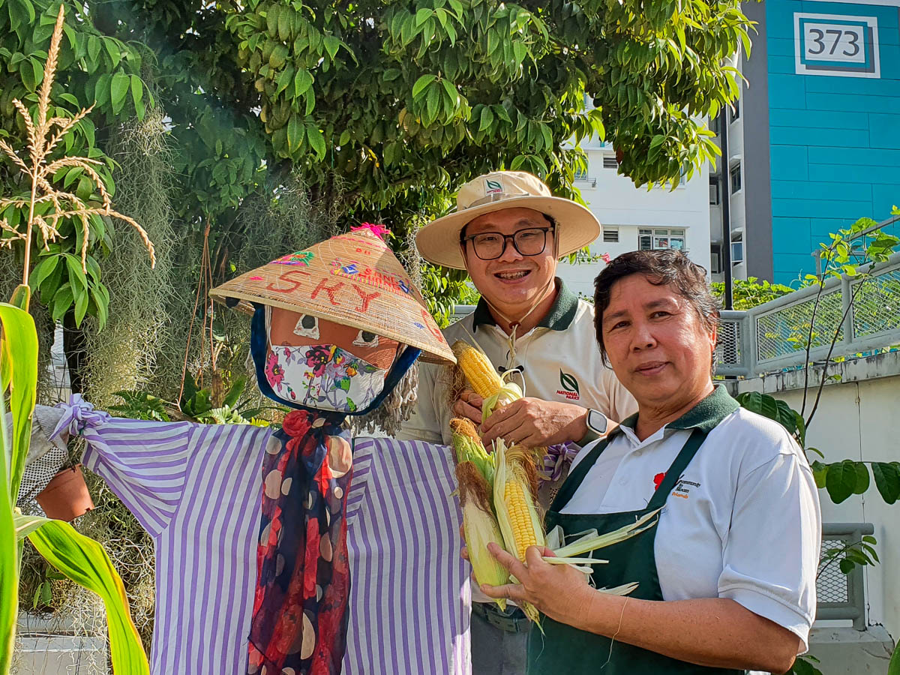
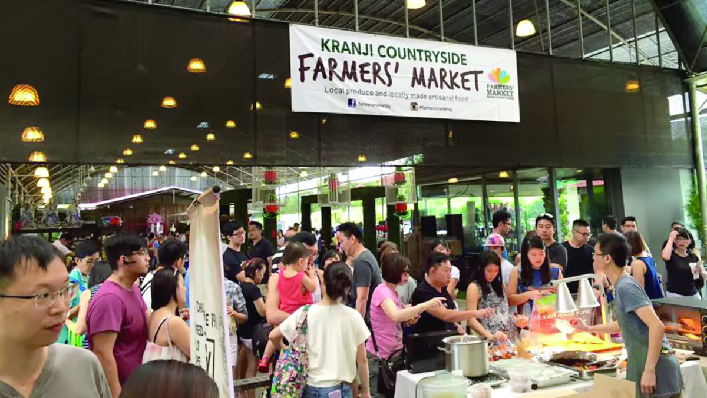

NPark Workshops
We plan to introduce workshops much like the Community in Bloom(CIB) project. We can have something along the lines of the Live Well, Age Well Programme.

Tengah is Singapore's newest HDB town in two decades, built around five “green” districts that blend nature, sustainability, and community. 3,800 families, representing both younger and older residents, have already moved into the Plantation District since last year. As Tengah encourages its residents to live green, the community gardens play a pivotal role in encouraging residents to come together and learn about the importance of sustainable food production. Given the experiences with other HDB estates, community gardens tend to be utilised only by elderly residents and/or a small group of gardening enthusiasts. HDB hopes that as Geography students, you can provide possible ideas to encourage greater involvement from residents of all ages in Tengah to develop greater community spirit and live up to Tengah's ideals of green living.
We plan to introduce workshops much like the Community in Bloom(CIB) project. We can have something along the lines of the Live Well, Age Well Programme.
Regularly scheduled events can draw more visitors and participants. Farmers' Markets can also be where residents can sell or exchange crops, building a small economy around the gardens. Lastly, cooking demonstrations can feature chefs who teach residents how to use their homegrown ingredients to make dishes.
